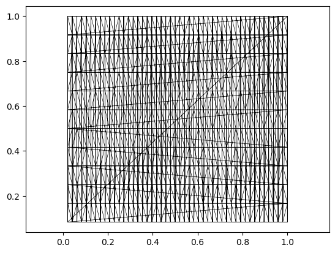

L = jnp.array([2.0, 3.0])
assert jnp.allclose(
displacement_periodic(
jnp.array([0.1, 0.2]),
jnp.array([1.9, 2.8]),
L,
),
jnp.array([-0.2, -0.4]),
)
assert jnp.allclose(
displacement_periodic(
jnp.array([1.9, 2.8]),
jnp.array([0.1, 0.2]),
L,
),
jnp.array([0.2, 0.4]),
)
assert jnp.allclose(
displacement_periodic_twisted(
jnp.array([0.0, 0.0]),
jnp.array([0.9, 1.1]),
jnp.array([1.0, 1.0]),
0.25,
),
jnp.array([0.15, 0.1]),
)
assert jnp.allclose(
displacement_periodic_twisted(
jnp.array([0.9, 0.9]),
jnp.array([0.1, -0.1]),
jnp.array([1.0, 1.0]),
0.25,
),
jnp.array([-0.05, 0.0]),
)periodic: Geometry in periodic boundary conditions
In many 2D biophysical simulations (see tutorial 3 on “vertex models”), it is convenient to work with periodic boundary conditions, i.e. simulate cells in a box with lengths \(\mathbf{L} = [L_x, L_y]\) where opposite sides are identified. This module contains tools for mesh geometry in periodic boundary conditions.
In triangulax, mesh connectivity and geometry are decoupled, so periodic boundary conditions are easy to implement. One needs two ingredients:
- A triangulation whose connectivity has the desired periodicity (e.g. a triangulation of a torus).
There are different ways to generate a triangulation of the torus - one example is included in test_meshes/torus_2d.obj. Note: edge flips/T1 on this mesh will preserve its topology, no further bookkeeping is needed. In particular, one does not need to keep track of any boundary vertices since there is no boundary. All triangulax tools related to the mesh connectivity (like the HeMesh class) can be used without modification.
- A displacement function that takes into account the periodicity.
For a rectangular domain with lengths \(\mathbf{L}\) the displacement vector between two points \(\mathbf{r}_1, \mathbf{r}_2\) can be computed as \[\mathbf{d} = \mathbf{r}_2 - \mathbf{r}_1 - \mathrm{round}\left(\frac{\mathbf{r}_2 - \mathbf{r}_1}{L} \right)\mathbf{L}\]
This always gives the shortest displacement vector between the two points (minimum-image convention). Note: nothing prevents you from changing the shape of your domain, i.e. \(\mathbf{L}\) dynamically during your simulation (for instance, to simulate growing tissues). You can even take gradients with respect to \(\mathbf{L}\).
For sheared domains (e.g. to impose simple shear), we also provide a displacement function implementing Lees-Edwards boundary conditions, which add an x-shift proportional to a shear factor \(s\) when wrapping in the y-direction.
Note: throughout this module, the displacement_fn argument is a callable (r_1, r_2) -> d that returns a 2D displacement vector, not a scalar distance.
How this module is organized
Most mesh geometry is intrinsic: triangle areas, angles, cotangent weights, Voronoi cell areas and perimeters, the Laplacian, the mass matrix and the Gaussian curvature all depend on the vertex positions only through the edge lengths (see the “Intrinsic geometry” sections of notebooks 00, 05 and 06). Edge lengths remain perfectly well defined across a periodic boundary - one just measures them with a displacement function. So the periodic workflow is:
displacement_fn = lambda r_1, r_2: displacement_periodic(r_1, r_2, L)
he_lengths = get_periodic_he_lengths(vertices, hemesh, displacement_fn)
areas = geometry.get_triangle_areas_intrinsic(he_lengths, hemesh)
cell_areas = geometry.get_voronoi_areas_robust_intrinsic(he_lengths, hemesh)
lap_u = linops.compute_cotan_laplace_intrinsic(he_lengths, hemesh, u)That is: compute the edge lengths once, then use the ordinary intrinsic functions.
The functions in this module cover what cannot be reduced to edge lengths, i.e. anything that returns a position or an orientation: the displacement functions themselves, the edge vectors and lengths they induce, unwrapped face corner positions, face centroids, Voronoi (circumcenter) positions, and signed triangle areas.
displacement_periodic_twisted
def displacement_periodic_twisted(
r_1:Float[Array, 'dim'], r_2:Float[Array, 'dim'], L:Float[Array, 'dim'], # Box lengths ([L_x, L_y] in 2d).
s:float, # Shear factor: wrapping in y shifts x by ``s * L_x``. This corresponds to vertex
positions carrying the shear as ``x -> x - s * y``; the opposite sign stretches
the edges instead of shearing them.
)->Float[Array, 'dim']:
Return the minimum-image displacement on a sheared periodic torus (Lees-Edwards BCs).
displacement_periodic
def displacement_periodic(
r_1:Float[Array, 'dim'], r_2:Float[Array, 'dim'], L:Float[Array, 'dim'], # Box lengths ([L_x, L_y] in 2d).
)->Float[Array, 'dim']: # Displacement ``r_2 - r_1`` under the minimum-image convention.
Return the minimum-image displacement on a rectangular torus.
IMPORTANT: the minimum-image convention always returns the shortest periodic image, so it only reproduces the intended mesh edge when every edge is shorter than min(L)/2. For a longer edge it silently returns the displacement to a different periodic image, giving wrong lengths, areas and angles with no error raised. Check with get_periodic_he_lengths(...).max() < L.min()/2. This matters for coarse periodic meshes and for a shrinking or strongly sheared box.
Edge vectors and edge lengths
These two functions are the only bridge that periodic boundary conditions need: they turn vertex positions plus a displacement function into per-half-edge vectors and lengths. Everything intrinsic follows from the lengths, and the vectors are what the position-dependent quantities further below are built from.
# this is an example of a 2d mesh with "periodic boundary conditions" - topologically, it is just a torus.
# Thus, the faces that wrap around the boundary.
trimesh = TriMesh.read_obj("../test_meshes/torus_2d.obj", dim=2)
hemesh = HeMesh.from_triangles(trimesh.vertices.shape[0], trimesh.faces)
vertices = trimesh.vertices
plt.triplot(vertices[:,0], vertices[:,1], trimesh.faces, lw=0.5, color="k")
plt.axis("equal")(np.float64(-0.028125350000000004),
np.float64(1.04895835),
np.float64(0.03749965),
np.float64(1.04583335))
hemesh.bdry_loops # the mesh has no boundary[]get_periodic_he_lengths
def get_periodic_he_lengths(
vertices:Float[Array, 'n_vertices dim'], hemesh:HeMesh, displacement_fn:Callable
)->Float[Array, 'n_hes']:
Get lengths of half-edges using a periodic displacement function.
This is the periodic counterpart of geometry.get_he_length, and the entry point to all intrinsic geometry under periodic boundary conditions: pass the result to any *_intrinsic function of the geometry or linops modules.
get_periodic_edge_vectors
def get_periodic_edge_vectors(
vertices:Float[Array, 'n_vertices dim'], # Vertex positions in the periodic box.
hemesh:HeMesh, # Half-edge mesh.
displacement_fn:Callable, # Periodic displacement function ``(r_1, r_2) -> r_2 - r_1 (mod L)``, e.g.
[`displacement_periodic`](https://nikolas-claussen.github.io/triangulax/src/geometric_quantities_periodic_bcs.html#displacement_periodic).
)->Float[Array, 'n_hes dim']: # Displacement vector per half-edge.
Edge vectors r_dest - r_orig per half-edge, using a periodic displacement function.
# box lengths, and the displacement function they define
L = jnp.array([1.0, 1.0])
displacement_fn = lambda r_1, r_2: displacement_periodic(r_1, r_2, L)
he_lengths = get_periodic_he_lengths(vertices, hemesh, displacement_fn)
he_lengths_naive = jnp.linalg.norm(vertices[hemesh.orig] - vertices[hemesh.dest], axis=1)
print(f"longest edge: {he_lengths.max():.3f} (periodic) vs {he_lengths_naive.max():.3f} (naive)")
print(f"{int((~jnp.isclose(he_lengths, he_lengths_naive)).sum())} of {hemesh.n_hes} "
"half-edges wrap around the boundary")
# the minimum-image convention only reproduces the intended mesh edges if every edge is
# shorter than min(L)/2 -- worth asserting once for a new mesh or a shrinking box
assert he_lengths.max() < L.min() / 2longest edge: 0.086 (periodic) vs 1.341 (naive)
238 of 3456 half-edges wrap around the boundaryIntrinsic geometry under periodic boundary conditions
With the edge lengths in hand, all intrinsic geometry is available through the ordinary functions of the geometry and linops modules - no periodic version required. The cell below computes triangle and Voronoi areas, corner angles, cotangent weights, the Laplacian and a mass matrix on the torus mesh, and checks them against exact results (a flat torus has zero angle defect everywhere, its dual cells tile the surface, and a Fourier mode is an approximate eigenfunction of the Laplacian).
# the whole intrinsic toolkit, on a periodic mesh
areas = geom.get_triangle_areas_intrinsic(he_lengths, hemesh)
corner_angles = geom.get_corner_angles_intrinsic(he_lengths, hemesh)
cotan_weights = geom.get_cotan_weights_per_edge_intrinsic(he_lengths, hemesh)
voronoi_areas = geom.get_voronoi_areas_robust_intrinsic(he_lengths, hemesh)
voronoi_perimeters = geom.get_voronoi_perimeters_intrinsic(he_lengths, hemesh)
# the torus mesh tiles a 1x1 box, and its dual cells tile it as well
assert jnp.allclose(areas.sum(), L[0] * L[1])
assert jnp.allclose(voronoi_areas.sum(), areas.sum())
assert jnp.allclose(geom.get_voronoi_areas_intrinsic(he_lengths, hemesh).sum(), areas.sum())
assert jnp.all(voronoi_areas > 0) and jnp.all(voronoi_perimeters > 0)
# the torus is flat and has no boundary: every angle sum is 2*pi, and by Gauss-Bonnet
# the total angle defect vanishes (chi = 0)
assert jnp.allclose(geom.get_angle_sum_intrinsic(he_lengths, hemesh), 2 * jnp.pi, atol=1e-10)
assert jnp.allclose(geom.get_angle_defect_intrinsic(he_lengths, hemesh).sum(), 0.0, atol=1e-10)
assert jnp.allclose(corner_angles.sum(), jnp.pi * hemesh.n_faces, atol=1e-10)
# a Fourier mode is an approximate eigenfunction of the Laplacian, with eigenvalue -2*(2*pi)^2
u = jnp.sin(2*jnp.pi*vertices[:, 0]) * jnp.cos(2*jnp.pi*vertices[:, 1])
lap_u = linops.compute_cotan_laplace_intrinsic(he_lengths, hemesh, u, normalize=True)
rel_err = jnp.linalg.norm(lap_u + 2*(2*jnp.pi)**2 * u) / jnp.linalg.norm(2*(2*jnp.pi)**2 * u)
print(f"periodic Laplacian rel. error vs -2k^2 u: {rel_err:.3f}")
assert rel_err < 0.05
# constants are in the kernel of the Laplacian, and the mass matrix is positive
assert jnp.allclose(linops.compute_cotan_laplace_intrinsic(he_lengths, hemesh, jnp.ones(hemesh.n_vertices)),
0.0, atol=1e-10)
mass = linops.mass_matrix_sparse_intrinsic(he_lengths, hemesh)
assert jnp.all(mass.data > 0) and jnp.allclose(mass.data.sum(), areas.sum())
# Lees-Edwards: shearing the box changes the geometry but not the topology, and the
# dual cells still tile the (equal-area) box
sheared = lambda r_1, r_2: displacement_periodic_twisted(r_1, r_2, L, 0.2)
he_lengths_sheared = get_periodic_he_lengths(vertices, hemesh, sheared)
assert not jnp.allclose(he_lengths_sheared, he_lengths)
assert jnp.allclose(geom.get_voronoi_areas_robust_intrinsic(he_lengths_sheared, hemesh).sum(),
geom.get_area_intrinsic(he_lengths_sheared, hemesh))periodic Laplacian rel. error vs -2k^2 u: 0.012Quantities that need explicit positions
What is not intrinsic is anything that returns a position or an orientation: edge lengths fix the shape of every triangle, but not where the triangles sit or how they are turned. These quantities do need a displacement function, and they are what remains of this module.
They all follow from the unwrapped face corners: pick one vertex of a face and place the other two relative to it by following displacement vectors. The resulting triangle is contiguous even if it wraps around the boundary, but its corners are expressed in the periodic image of that face and are not wrapped back into the box. Face centroids, circumcenters (the Voronoi dual vertices) and signed areas are then computed from these corners exactly as in the non-periodic case.
Two consequences worth remembering:
- The returned positions may lie outside the box. Do not feed them to functions that assume ordinary Euclidean coordinates for the whole mesh (
geometry.get_dual_he_length,mesh.cellplot); dual edge lengths, for instance, come fromgeometry.get_voronoi_edge_lengths_intrinsicinstead. - Signed areas, unlike the unsigned intrinsic ones, detect inverted triangles - the event a vertex-model simulation has to watch for.
get_periodic_triangle_orientations
def get_periodic_triangle_orientations(
vertices:Float[Array, 'n_vertices dim'], hemesh:HeMesh, displacement_fn:Callable
)->Float[Array, 'n_faces']:
Per-face orientation (+1, -1 or 0) under periodic boundary conditions.
Periodic counterpart of geometry.get_triangle_orientations.
get_periodic_oriented_triangle_areas
def get_periodic_oriented_triangle_areas(
vertices:Float[Array, 'n_vertices dim'], hemesh:HeMesh, displacement_fn:Callable
)->Float[Array, 'n_faces']:
Signed triangle areas under periodic boundary conditions.
Positive for counter-clockwise (positively oriented) triangles, negative for inverted ones. Unlike the intrinsic geometry.get_triangle_areas_intrinsic, which goes through Heron’s formula and is therefore unconditionally non-negative, this detects triangle inversion.
get_periodic_voronoi_face_positions
def get_periodic_voronoi_face_positions(
vertices:Float[Array, 'n_vertices dim'], hemesh:HeMesh, displacement_fn:Callable
)->Float[Array, 'n_faces dim']:
Voronoi dual positions (circumcenters) using a periodic displacement function.
The circumcenter is computed in intrinsic barycentric coordinates (trigonometry.get_circumcenter_from_lengths) from the periodic edge lengths, then mapped back onto the unwrapped face corners.
Like get_periodic_face_centroids, the returned positions are in the periodic image of their own face and are not wrapped back into the box. Do not feed them to geometry.get_dual_he_length or mesh.cellplot, which assume unwrapped Euclidean coordinates – for dual edge lengths use geometry.get_voronoi_edge_lengths_intrinsic.
get_periodic_face_centroids
def get_periodic_face_centroids(
vertices:Float[Array, 'n_vertices dim'], hemesh:HeMesh, displacement_fn:Callable
)->Float[Array, 'n_faces dim']:
Face centroids (barycenters) using a periodic displacement function.
Returned in the periodic image of their own face, not wrapped back into the box (see get_periodic_face_corners).
get_periodic_face_corners
def get_periodic_face_corners(
vertices:Float[Array, 'n_vertices dim'], # Vertex positions in the periodic box.
hemesh:HeMesh, # Half-edge mesh.
displacement_fn:Callable, # Periodic displacement function ``(r_1, r_2) -> r_2 - r_1 (mod L)``.
)->Float[Array, 'n_faces 3 dim']: # Unwrapped positions of the three corners of each face.
Vertex positions of each face, unwrapped into a single periodic image.
The first corner is the origin vertex of the face’s incident half-edge and keeps its position in the box; the other two are placed relative to it by following displacement vectors, so that the triangle is contiguous even if it wraps around the periodic boundary. The positions are therefore NOT wrapped back into the box.
Corners are ordered as in mesh.HeMesh.faces, so the result can be used like vertices[hemesh.faces] in the non-periodic case.